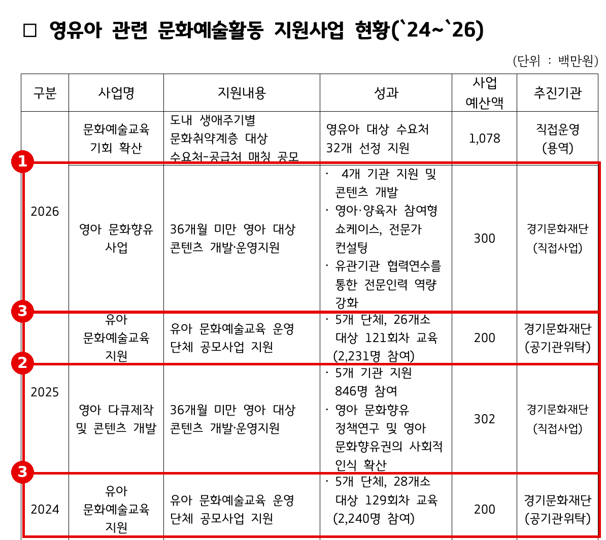
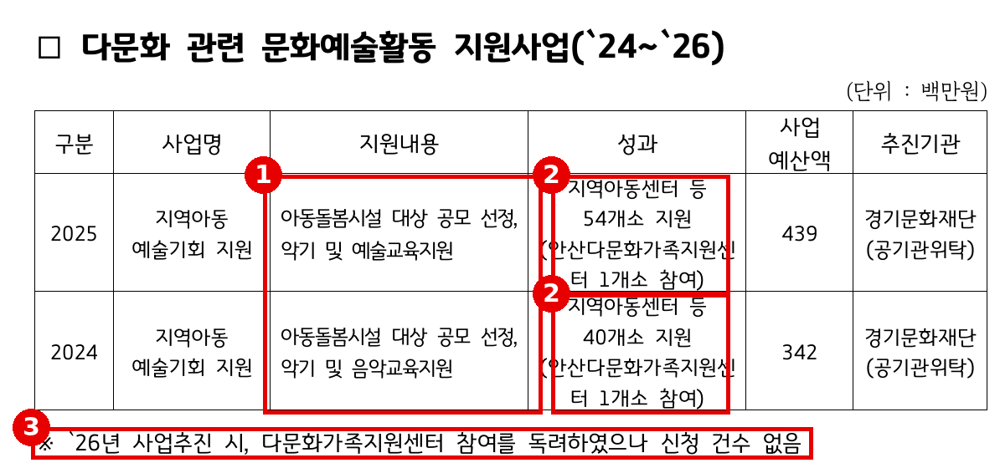
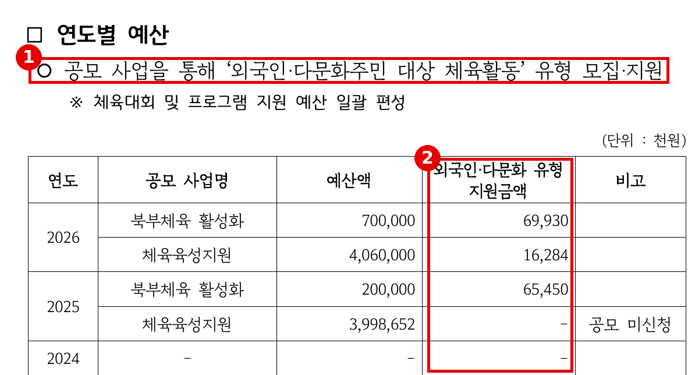

2026년 행정사무감사 질의서 (발언용 · 5분)
다문화 문화예술 지원, 사업이 없습니다
— 외국인주민 86만 명, 도의 답은 "독려하였으나 신청 건수 없음"입니까
문화체육관광위원회 황은화 위원 → 문화체육관광국장(예술정책과)
| ① 사업이 없다 | 다문화 문화예술 지원사업을 묻자 답은 지역아동 예술기회 지원 1개 — 아동돌봄시설 대상 일반 공모 → 이주배경 주민을 위해 만든 문화예술 사업은 없다 |
| ② 실적은 1곳 | 2024년 40개소·2025년 54개소 중 다문화가족지원센터 1곳, 2026년 "신청 건수 없음" → "독려"만으로는 아무도 오지 않았다 |
| ③ 조례·체육과의 차이 | 「경기도 문화다양성 조례」는 재원 마련·실태조사를 의무로 정함. 체육은 외국인·다문화 공모 유형으로 8,621만 원(2026) → 같은 국에서 문화예술만 비어 있다 |
■ 발언 — 도입
국장님, 이주배경 주민의 문화예술 향유에 대해 묻겠습니다.
행정안전부 통계로 경기도 외국인주민은 85만 9,943명입니다. 도민 100명 중 6명꼴입니다. 안산은 10만 9,544명, 시민 여섯 명 중 한 명입니다. 17개 시도 가운데 가장 많고, 두 번째인 서울(45만 3,201명)의 두 배에 가깝습니다.
그래서 이번 감사에서 최근 3년간 다문화 관련 문화예술활동 지원사업을 요구했습니다. 도가 낸 답은 두 줄짜리 표 하나와, 한 줄짜리 설명입니다. "참여를 독려하였으나 신청 건수 없음."
오늘은 몇 곳을 더 지원하라는 말씀을 드리려는 것이 아닙니다. 문화예술 분야에 이주배경 주민을 위한 정책이 있는지, 왜 신청조차 없었는지, 조례가 정한 책무를 어떻게 이행하는지, 세 가지를 확인하겠습니다.
[근거] 행정안전부 「2025년 지방자치단체 외국인주민 현황」
※ 출처: 행정안전부 발표(2026.10.28.) 보도: 파이낸셜뉴스 https://www.fnnews.com/news/202610281332400713 / 코리안센터 https://www.koreancenter.or.kr/news/articleView.html?idxno=1430972 (비율은 파이낸셜뉴스 보도 기준) |
▶ 질문 1 — 다문화 사업을 물었더니, 일반 공모 하나가 돌아왔습니다
도가 "다문화 관련 문화예술활동 지원사업"으로 제출한 것은 지역아동 예술기회 지원 한 사업입니다. 지역아동센터 같은 아동돌봄시설을 공모로 뽑아 악기를 빌려주고 예술교육을 하는 사업입니다. 공모 대상에 다문화가족지원센터가 들어 있을 뿐, 이주배경 주민을 위해 만든 사업이 아닙니다.
같은 답변서에서 영유아는 다릅니다. 36개월 미만 영아만을 위한 콘텐츠 사업이 2025년 3억 200만 원, 올해 3억 원 따로 있고, 유아 문화예술교육 공모도 따로 있습니다. 대상을 정해 사업을 만들면 실적이 나옵니다. 영유아는 그렇게 했고, 이주배경 주민은 하지 않았습니다. 문체국 문화예술 사업 가운데 이주배경 주민을 대상으로 하거나 가점을 주는 사업이 하나라도 있습니까? 없다면 왜 없습니까?
▷ "문화예술 공모는 모든 도민에게 열려 있습니다."
→ 열려 있는 것과 닿는 것은 다릅니다. 열어 둔 결과가 3년간 다문화가족지원센터 1곳입니다.
▷ "다른 공모에서도 다문화 관련 단체가 선정되고 있습니다."
→ 맞습니다. 같은 발간본의 「경기도 문화의 날」 지원 목록에는 2024년 "국악 다문화 열전", "다문화 공감놀이 인형극"이 있습니다. 그런데 이번 답변서에는 빠졌습니다. 도 스스로 다문화 문화예술 사업을 모아 보지 않았다는 뜻입니다. 국 전체 사업을 다시 정리해 제출해 주십시오.
[근거] 발간본 2권 67번 527쪽 — 영유아는 대상 사업이 따로 있다 
※ 출처: 문화체육관광국 행정사무감사 1차 요구자료(발간본 2권) 67번 「최근 3년간 영유아 관련 문화예술활동 지원사업 운영계획 및 현황 등」(예술정책과, 이오수·이지혜·전예슬·황은화 의원 요구) 527쪽 (원문 재현, 발췌) |
[근거] 발간본 2권 18번 — 「경기도 문화의 날」에는 다문화 사업이 있었다
※ 출처: 발간본 2권 18번 「최근 3년간 경기도 문화의 날 지원 현황」(문화정책과) 217·222쪽. 사업명 검색으로 확인한 것으로, 전체 목록은 아님 |
▶ 질문 2 — "독려하였으나 신청 건수 없음"
그 한 사업의 다문화 실적은 3년 동안 안산다문화가족지원센터 1곳입니다. 2024년 40개소 중 1곳, 2025년 54개소 중 1곳입니다. 그리고 올해는 도가 직접 이렇게 적었습니다. "다문화가족지원센터 참여를 독려하였으나 신청 건수 없음."
신청이 없다는 것은 결과입니다. 원인은 따로 있습니다. 공모 안내가 어떤 말로 나갔는지, 센터에 악기를 두고 정기 수업을 할 공간과 인력이 있는지, 현장에 가 보면 답이 나옵니다. 신청이 없었던 이유를 조사했습니까? 독려는 언제, 어느 센터에, 어떤 방식으로 했습니까? 공모 요건이 다문화가족지원센터 여건에 맞는지 검토한 적이 있습니까?
▷ "도내 다문화가족지원센터에 공문으로 안내했습니다."
→ 공문 한 장이 독려라면, 그 결과가 신청 0건입니다. 안내 공문과 발송 대상 기관 목록을 제출해 주십시오.
▷ "신청이 없다는 것은 수요가 없다는 뜻입니다."
→ 외국인주민이 86만 명, 안산만 11만 명입니다. 수요가 없는 것이 아니라 사업이 수요에 닿지 않는 것입니다.
[근거] 발간본 2권 67번 527쪽 — 다문화 관련 지원사업 
※ 출처: 발간본 2권 67번 527쪽 (원문 재현, 발췌) |
▶ 질문 3 — 조례는 재원을 마련하라고 합니다
근거가 없는 것도 아닙니다. 「경기도 문화다양성의 보호와 증진에 관한 조례」 제3조는 도지사가 문화다양성에 기반한 문화예술 활동을 권장·보호·육성하고 "이에 필요한 재원을 마련하여야 한다"고 정합니다. 제11조는 도내 문화다양성 실태조사를 실시하고 그 결과를 기본계획에 "반영하여야 한다"고 정합니다.
같은 국의 체육 분야는 이미 움직였습니다. 공모사업에 "외국인·다문화주민 대상 체육활동" 유형을 따로 두고, 2025년 6,545만 원, 올해 8,621만 원을 지원했습니다. 체육은 유형을 만들었고, 문화예술은 독려에 그쳤습니다. 조례에 따른 문화다양성 실태조사를 한 적이 있습니까? 실행계획에 이주배경 주민의 문화예술 향유 과제가 들어 있습니까? 2027년 예산안에 이 조례를 근거로 편성한 사업이 있습니까?
▷ "문화다양성 조례는 예술정책과 소관이 아닙니다."
→ 그래서 국장님께 묻습니다. 조례는 한 과에, 예술 지원은 다른 과에 나뉘어 있는 사이 이주배경 주민은 어느 쪽 사업에도 들어 있지 않습니다.
▷ "재정 여건이 어려워 신규 사업은 어렵습니다."
→ 새 예산이 없어도 할 수 있는 일이 있습니다. 기존 공모에 이주배경 주민 가점과 다국어 안내를 넣는 데에는 큰 돈이 들지 않습니다.
[근거] 「경기도 문화다양성의 보호와 증진에 관한 조례」
※ 출처: 「경기도 문화다양성의 보호와 증진에 관한 조례」(일부개정 2025.10.10.) 제3조제1항, 제10조제1항, 제11조제1항 (발췌) |
[근거] 발간본 3권 114번 82쪽 — 체육은 외국인·다문화 유형을 만들었다 
※ 출처: 문화체육관광국 행정사무감사 1차 요구자료(발간본 3권) 114번 「「경기도 외국인주민 생활체육 참여 지원 조례」 제정 이후 지원현황」(체육진흥과) 82쪽 (원문 재현, 발췌). 2026년 합계는 의원실 산출 |
■ 마무리 · 요구사항
문화예술은 선주민과 이주민이 같은 객석에 앉고 같은 무대에 서는, 가장 자연스러운 징검다리입니다. 그러나 일반 공모에 "참여를 독려"하는 방식으로는 그 다리가 놓이지 않습니다. 대상을 정하고, 문턱을 낮추고, 현장에서 확인해야 합니다. 이주배경 주민도 경기도민입니다. 끝까지 챙겨 주십시오.
하나, 2027년 문체국 문화예술 사업 가운데 이주배경 주민을 대상으로 하거나 가점을 둔 사업 목록을 2026년 12월까지 제출하고, 없다면 기존 공모에 이주배경 주민 참여 가점과 다국어 안내를 넣는 방안을 마련해 주십시오.
둘, 「경기도 문화다양성 조례」 제11조에 따른 실태조사 실시 여부와 결과, 실행계획에 담긴 이주배경 주민 문화예술 과제를 2027년 첫 임시회 전에 보고해 주십시오.
셋, 2026년 다문화가족지원센터·외국인주민지원센터에 보낸 안내 공문과 미신청 사유 파악 결과를 제출하고, 체육 분야처럼 "이주배경 주민 문화예술" 전용 공모 유형 신설을 2027년 공모 공고 전까지 검토해 주십시오.